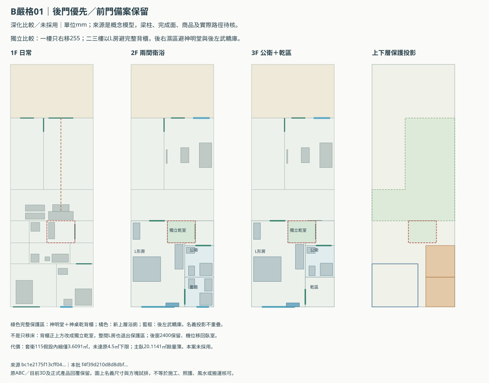
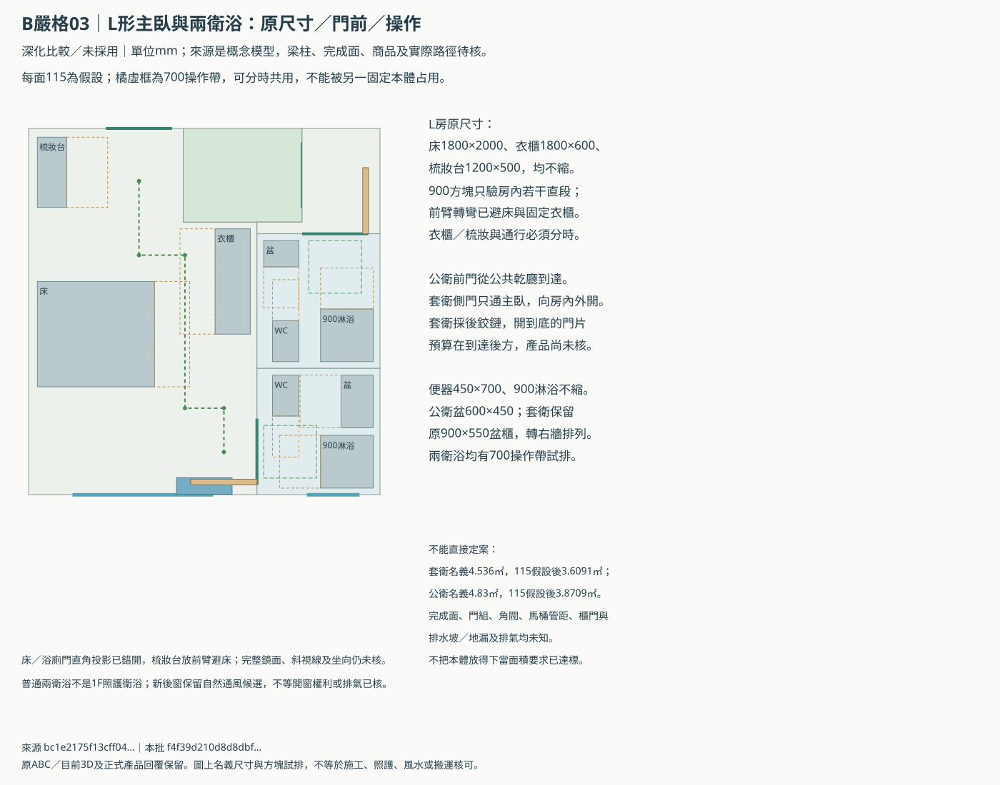

B棟：把已知祭祀衝突真正移開
本案以完整房間用途及濕區投影檢查，不靠加防水、假天花或只移床。保留後門優先及無後巷前門備案，各三態。
嚴格幾何比較，尚未採用。 已列投影有改善，但套衛完成面積仍有缺口，梁柱、管線、座向、鏡面與成品門等資料未知，不能宣稱「全屋風水沒有任何問題」。原3D及149份控制維持。
優先研究L形臥室＋獨立乾保護區＋後右濕區
| 項目 | 本案結果 | 判讀 |
|---|---|---|
| 一樓祭祀門／神桌 | 同軸x3655，只右移255；正門1800不縮 | 仍朝道路／騎樓 |
| 完整背櫃上方 | 獨立乾室2030×1600；房間用途不是臥室 | 禁床、浴廁、洗衣、污水立管 |
| 上層濕區 | 改後右；與背櫃後緣名義距200 | 避整廳／背櫃／後左武轎庫投影；管線尚未核 |
| L形主臥 | 22.398㎡名義；115假設20.1141㎡；150假設19.44㎡ | 20㎡目標對完成面很敏感 |
| 公衛 | 4.83㎡名義；115假設3.8709㎡ | 普通器具與700操作可排，排氣待核 |
| 套衛 | 4.536㎡名義；115假設3.6091㎡ | 尚未達原4.5㎡下限與6㎡目標，不能採用為完成版 |
| 原家具／後窗 | 床、衣櫃、梳妝與900盆櫃不縮；後窗仍2400 | 實品、收納操作／鏡面與氣流仍待核 |
一樓背櫃加寬後，右側公共段名義1330mm；兩版的洗衣、後右照護浴室及後左庫不搬。二樓保兩間完整普通衛浴器具，三樓保一間公衛與後段乾區。
從朝街祭祀正門進行祭拜是屋主已確認規矩；不拿其他流派「一般宅門不對神位」的說法反向改掉需求。這份研究以已確認家規為準，再加保守投影條件；沒有把網路文章或模型意見當作統一標準。
圖面與狀態
後門優先整棟圖／前門備案整棟圖／L房／兩衛浴細圖／一樓兩版六態




哪些清楚，哪些還沒通過
| 檢查 | 結果 | 範圍 |
|---|---|---|
| 原濕區不能以立管／防水解套 | 原控制有衝突 | 原圖仍保留作對照；下列試排重新分配實際濕區，不靠遮擋或換名稱消除投影。 |
| 濕區避完整祭祀／背櫃與武轎庫投影 | 列明幾何未見重疊 | 只對明列房間多邊形，實際梁板與給排水未到；200mm是名義分區距離，非施工或防漏保證。 |
| 睡眠用途避完整神明堂及背櫃 | 列明幾何未見重疊 | 不是只移床；L形房間輪廓本身退出保護區，該區獨立乾室禁床／浴廁／濕設備。 |
| 後段分區不重複計面積 | 列明幾何未見重疊 | 不封前3.9m，不挪入鄰棟或戶外平台。 |
| L房900方塊局部到達試排 | 列明幾何未見重疊 | 梳妝／衣櫃操作與通行分時。不是輪椅、門口或整棟救援演練；門組仍未知。 |
| 一般衛浴本體／700操作及門前 | 列明幾何未見重疊 | 操作可分時，固定器具不能侵入別件操作；1130減230得900只是門框預算，普通盆櫃不可當照護盆。 |
| 一般衛浴本體／700操作及門前 | 列明幾何未見重疊 | 操作可分時，固定器具不能侵入別件操作；1130減230得900只是門框預算，普通盆櫃不可當照護盆。 |
| 濕區避完整祭祀／背櫃與武轎庫投影 | 列明幾何未見重疊 | 只對明列房間多邊形，實際梁板與給排水未到；200mm是名義分區距離，非施工或防漏保證。 |
| 睡眠用途避完整神明堂及背櫃 | 列明幾何未見重疊 | 不是只移床；L形房間輪廓本身退出保護區，該區獨立乾室禁床／浴廁／濕設備。 |
| 後段分區不重複計面積 | 列明幾何未見重疊 | 不封前3.9m，不挪入鄰棟或戶外平台。 |
| L房900方塊局部到達試排 | 列明幾何未見重疊 | 梳妝／衣櫃操作與通行分時。不是輪椅、門口或整棟救援演練；門組仍未知。 |
| 一般衛浴本體／700操作及門前 | 列明幾何未見重疊 | 操作可分時，固定器具不能侵入別件操作；1130減230得900只是門框預算，普通盆櫃不可當照護盆。 |
| 主臥與衛浴面積代價 | 面積未全達／對工差敏感 | 主臥115假設20.1141㎡、150假設19.44㎡；套衛115假設3.6091㎡，低於原4.5㎡下限及6㎡目標。不能寫成全需求達標。 |
| 朝街正門與神桌同軸，完整乾背牆 | 列明幾何未見重疊 | 1F不前移神桌；前門原1800寬保留，實牆材質／梁／香火排風與方向擇位未核。 |
| 屋頂保護投影及列明機身 | 列明幾何未見重疊 | 神明堂及新背櫃的投影向屋頂延伸禁濕設備；目前兩台機身未壓區，不代表未排水塔／熱水器或能源設備已核。 |
完整尺寸與來源／待決與工程回覆空表。資料未知維持unknown，原66項需求及正式產品回覆沒有被改成通過。
已排除兩條捷徑：只移立管不能消除上層濕區；只把神桌前移，會擋住前門繞到後左庫的局部轉向。主臥不把外包矩形當L形實際面積，套衛不足也不因器具排入就掩蓋。
Claude Code：已嘗試，尚無回覆或共識
上一輪工具全停用的只讀請求17秒逾時，已終止自己的程序組，沒有背景重試，也沒有取得Claude建議。原始狀態另存；最新排法另寫v2檢討稿。
依屋主要求，耗時雲端討論交另一個WSL終端執行，最多15分鐘；輸出會保留原文、來源與未達共識狀態。這不修改圖面或授權自動採用：
cd /root/workspace/houseDesignPrepare python3 scripts/review_b_fengshui_with_claude.py --brief Docs/claude-b-fengshui-followup-v2.md --timeout 900
將最後的Result路徑貼回來即可。我會逐項核對套衛面積、主臥目標、投影、門片與搬轎，不把Claude單方面回答當兩人共識。
下一個實際卡點
先請Claude檢討能否在32地坪概念外框內，保背櫃獨立乾區、主臥20㎡及兩衛浴原面積；目前這份不能全部滿足。若仍無法達成，就把兩間衛浴是否共享、主臥面積或基地可建條件的具體取捨交屋主決定，原要求先保留。
本案不是全屋風水保證。梁壓神桌／床、RC背牆、真正方位／路沖、獨立香火排風與補氣、管線及後巷搬運需正式資料才能核實。參考：佛具商實務、設計媒體背牆整理，只作民俗觀點，不採其化解說法當證明。
來源 bc1e2175f13cff043deeb725e190a3b59908810f58661d9efadec05efbca9a5e
本研究 f4f39d210d8d8dbf13eac4df333e2726139b045d69ad64bacf2069844929f767。靜態比較，未啟動瀏覽器、WebGL或整套3D重建。